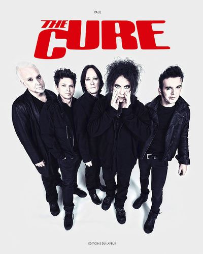

Mon Groupe Préféré : The Cure
The Cure ([ðə ˈkjʊə(ɹ)]4) est un groupe rock britannique, originaire de Crawley, dans le Sussex de l'Ouest, en Angleterre. Formé en 1978, le groupe comprend actuellement Robert Smith au chant et à la guitare, Roger O'Donnell aux claviers, Reeves Gabrels à la guitare, Perry Bamonte à la guitare et aux claviers, Simon Gallup à la basse, et Jason Cooper à la batterie. Robert Smith est la figure emblématique du groupe. Seul membre présent depuis son origine, il en est le parolier et le principal compositeur. En plus d'en être le chanteur et guitariste, il joue également les claviers et la basse. Associé au mouvement new wave, The Cure a développé un son qui lui est propre, aux ambiances tour à tour mélancoliques, rock, pop, gothiques et psychédéliques, créant de forts contrastes, où la basse est mise en avant et n’est pas seulement un instrument d’accompagnement. Elle est, notamment en raison du jeu particulier du bassiste Simon Gallup, une composante essentielle de la musique de The Cure. L'utilisation conjointe d'une basse six cordes (souvent une Fender VI), au son caractéristique, très souvent utilisée dans les motifs mélodiques, contribue pour beaucoup à la signature sonore si singulière du groupe.
Liste des membres du groupe
- Robert Smith : chant, guitare
- Roger O'Donnell : claviers
- Jason Cooper : batterie
- Reeves Gabrels : guitare
- Simon Gallup : basse
- Perry Bamonte : guitare, claviers